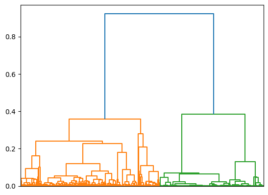

| Is Best Seller | Stars | Reviews | Price | List Price | Bought In Month |
|---|---|---|---|---|---|
| 0 | 0.78 | 0.3 | 0.0153 | 0.0275 | 0.333 |
| 0 | 0.88 | 0 | 0.0684 | 0.0662 | 0.0333 |
| 0 | 0.92 | 0 | 0.0258 | 0.025 | 0.0167 |
| 0 | 0.9 | 0 | 0.108 | 0.104 | 0 |
| 0 | 0.88 | 0 | 0.0153 | 0.0149 | 0.0333 |
Clustering
Overview
Clustering is a fundamental unsupervised learning technique in machine learning that involves grouping similar data points together based on certain features or characteristics. The goal of clustering is to partition a dataset into subsets or clusters, where data points within the same cluster are more similar to each other than to those in other clusters. This process helps in discovering inherent structures within the data, identifying patterns, and gaining insights into the underlying relationships.
Partitional clustering algorithms, such as k-means, partition the data into a predefined number of clusters. The k-means algorithm iteratively assigns data points to the nearest cluster centroid based on a distance metric, commonly the Euclidean distance. The centroids are then recalculated as the mean of the data points in each cluster, and the process continues until convergence. K-means is efficient for large datasets and works well when clusters are spherical and of similar size. However, it may struggle with non-linear or irregularly shaped clusters and requires specifying the number of clusters beforehand.
Hierarchical clustering, on the other hand, does not require specifying the number of clusters in advance. It creates a hierarchical tree-like structure, called a dendrogram, by iteratively merging or splitting clusters based on their similarity. There are two main approaches to hierarchical clustering: agglomerative (bottom-up) and divisive (top-down). Agglomerative clustering starts with each data point as a separate cluster and then merges the closest pairs of clusters until only one cluster remains. Divisive clustering begins with all data points in one cluster and recursively splits them into smaller clusters. The choice of distance metric, such as Euclidean, Manhattan, or Mahalanobis distance, influences the clustering results in hierarchical algorithms.
The distance metric used in clustering plays a crucial role in determining the similarity or dissimilarity between data points. Euclidean distance is commonly used and measures the straight-line distance between two points in Euclidean space. It works well when data features are continuous and have similar scales. Manhattan distance, also known as city block distance, calculates the distance along the axes, making it suitable for high-dimensional data or when features are not directly comparable in scale. Mahalanobis distance accounts for the covariance between variables and is useful when dealing with correlated features or data with different variances.
In this specific project, we will be using clustering in order to see if any trends can be found by hierarchical clustering that show relationships between the features that were previously unknown.
Data Preperation
Clustering Methods
Clustering requires only unlabeled numeric data, so the following work was done in order to prepare the data:
- Get only the numerical/boolean columns
- Fill NaNs with zeros
- Scale the data to min/max [0, 1]
A sample of the final form of the data used can be seen in Table 1. A link to the data used can be found here.
Code
The jupyter notebook code for running the PCA can be found here, or click on the link card to the right.

Results
Important
If the interactive figures don’t load (is blank screen space with caption showing), dont worry: just turn off all ad-blockers/privacy browsing, make sure that Chrome/Firefox is being used, and refresh the page (or close and re-open the website tab) until all figures load.
The following clustering algorithms were tested:
- K-means clustering via
sklearn, with k = 2…5 - Hierarchical clustering via
sklearn, using Cosine Similarity as the distance measure - Kprototypes viea
kprot, in order to cluster on the categorical data as well
The Kprototypes algorithm performed nearly exactly the same as hierarchical clustering, so from this point on we will only be discussing the first 2 clustering methods used.
Unfortunately, the k-means clustering performed poorly, as can be seen in Figure 1. Additionally, the silhouette scores changed dramatically upon each re-run of the algorithm, showing poor convergence.
The hierarchical clustering also struggled, likely as there were over 1M observations seen; ultimately, as seen in Figure 2, the clustering that produced 2 clusters seemed to be the “best”.

We compare the output of the clusters found, at rank 2, across all algorithms used in Figure 3. As one can see, they were very similar, with Rand indexes very high (a Rand index of 1 means perfectly same clusters, and 0 meaning no relation at all).
We include a splom of the clusters found by hierarchical clutering in Figure 4. By visually inspecting the colored clusters, we can describe the clusters as the following:
Cluster 1
- Stars above about 2.5
- Most review amounts
- No discernible pattern amongst
Price,Date Scraped
Cluster 2
- Stars below about 2.5
- Small amount of reviews
- No discernible pattern amongst
Price,Date Scraped
Conclusions
From the above results, several interesting conclusions can be drawn:
- The clusters found were in general very similar to each other across all algorithms used, when rank = 2.
- The clusters found seemed to indicate a strong relation between products that have low amount of stars and reviews, vs everything else.